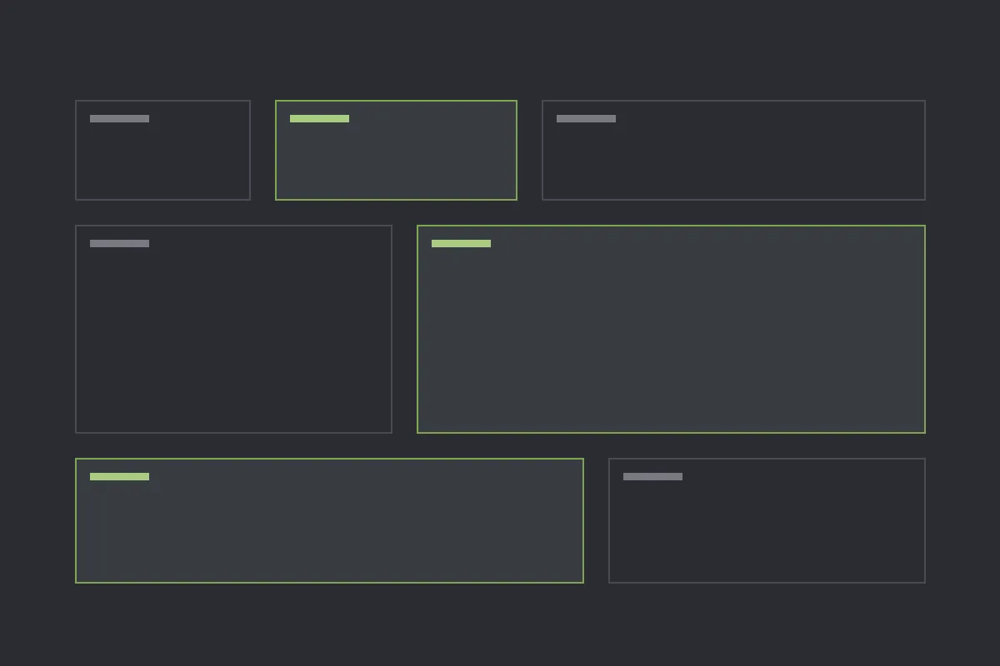

Rådgivning · Gjøvik
Vi gir plass til det som er viktig.
Makingspace skaper plass og gir plass til det som er viktig innen økonomi, utvikling og problemløsning. Et delaktig blikk utenfra gir nye og verdifulle perspektiver.
StrategiTransaksjonerStyrearbeid
01 — Oppdrag
Hvilke oppdrag gir vi plass
Konkret rådgivning, diskusjonspartner eller fasilitator i prosesser.

02 — Om oss
En engasjert problemløser
Erik Ramsberg har 30 år bak seg innen rådgivning og revisjon, de siste 20 årene som partner i BDO. Det har gitt innsikt og erfaring i møtet med ulike typer virksomheter – og et skarpt blikk for både helhet og detaljer.
- 30 år – rådgivning og revisjon.
- 20 år – partner i BDO.
- Enkelt – det komplekse forklart enkelt.
03 — Slik jobber vi
Fire steg
Fra første samtale til oppfølging.
- Samtale
Hva som er viktig, og hva som haster.
- Blikk utenfra
Perspektiver dere kanskje ikke har sett.
- Arbeid
Rådgivning, prosess eller fasilitering.
- Oppfølging
At det som ble bestemt, faktisk skjer.
Hvem gir du plass til?
Ta kontakt for en samtale om hva som er viktig for dere – og hva som bør få mer plass.